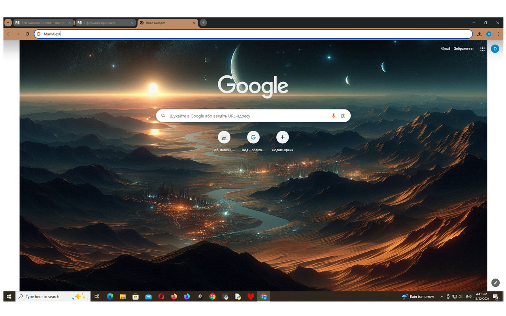

Light Beyond the Horizon: Створіть атмосферу спокою та гармонії
Light Beyond the Horizon — це нова тема для Mozilla Firefox та Google Chrome, яка створена для тих, хто цінує гармонію, естетику та комфорт. Її кольорова палітра поєднує темні відтінки з м'якими світловими акцентами, які додають інтерфейсу загадковості та спокою.
Ця тема для браузера створює ідеальний баланс темних відтінків із ніжними світловими акцентами, що робить її приємною для очей і додає глибини та загадковості. Легкий, м'який світловий відблиск на горизонті додає атмосферу спокою та занурює в тишу, створюючи ідеальні умови для роботи пізно вночі або для моментів роздумів. Темні відтінки плавно переходять у світліші тони, що допомагає зосередитися, зберігаючи при цьому гармонійний вигляд інтерфейсу. Завдяки цьому дизайну, ваш браузер виглядатиме елегантно та сучасно, наповнюючи екран відчуттям простору і глибини космічного пейзажу.
Основний акцент теми — плавний перехід від темного фону до ніжних світлових акцентів. Такий дизайн сприяє зменшенню напруги на очі, забезпечує комфорт під час тривалої роботи та створює атмосферу для роздумів чи творчості. Особливо це оцінять користувачі, які працюють пізно ввечері або віддають перевагу спокійним, гармонійним інтерфейсам.
Якщо ви шукаєте стильну тему, яка зробить ваш браузер приємним і зручним у використанні, оберіть Light Beyond the Horizon. Завантажте її просто зараз із магазину розширень!